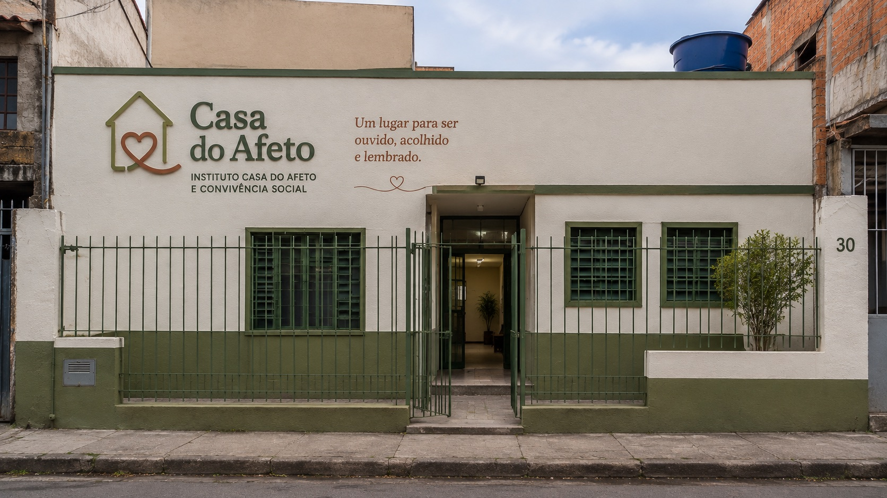
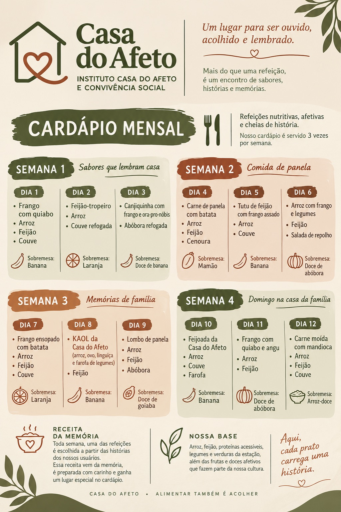
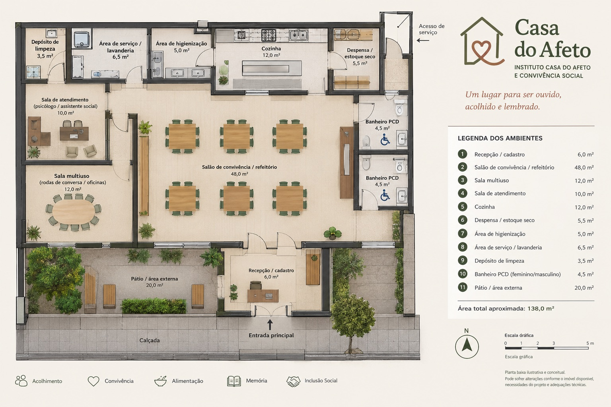

Contribuir para o acesso à alimentação adequada e para o enfrentamento da insegurança alimentar.

role para conhecer o projeto
instituto casa do afeto e convivência social
um lugar para ser ouvido, acolhido e lembrado
Trabalho apresentado por Maria Eduarda, Mariana Rosa, Kesley Klisman e Kevin Santana.
por que existimos
pessoas em situação de rua no CadÚnico, alta de 97,4% desde 2022.
Fonte: MDS, jun. 2026.do Brasil ainda em insegurança alimentar moderada ou grave.
Fonte: FAO, 2022 a 2024.E não falta só comida. Falta acolhimento: ser ouvido, lembrado e tratado com dignidade.
É para esse cenário que a Casa do Afeto vai nascer.
agenda 2030 · ONU
A Casa do Afeto nasce de uma proposta local, mas está conectada a objetivos globais.
A proposta está alinhada aos Objetivos de Desenvolvimento Sustentável (ODS), estabelecidos pela Organização das Nações Unidas como parte da Agenda 2030. Entre os 17 objetivos, cinco possuem relação direta com a atuação proposta pela Casa do Afeto.
deslize para ver os cinco objetivos →
Contribuir para o acesso à alimentação adequada e para o enfrentamento da insegurança alimentar.

Promover bem-estar, acolhimento e melhores condições de vida para pessoas em situação de vulnerabilidade.

Promover respeito, igualdade e combate à discriminação, garantindo um espaço acolhedor para todas as pessoas.

Reconhecer o acesso à água, higiene e saneamento como elementos fundamentais para saúde e dignidade.

Contribuir para a inclusão social, redução das desigualdades e ampliação do acesso a oportunidades e direitos.
Na Casa do Afeto, esses objetivos se encontram em uma mesma proposta: alimentar, acolher, ouvir e promover dignidade.
da agenda global à casa
alimentação
bem-estar
respeito e igualdade
higiene e dignidade
inclusão social
É nesse contexto que a Casa do Afeto propõe uma solução local para contribuir com desafios que também são globais.
da agenda à prática
Refeições nutritivas, três vezes por semana.
Um espaço seguro, sem julgamento.
Rodas de conversa e atendimento.
Vínculos que nascem à mesa.
Dignidade, direitos e oportunidades.
a ideia
Comida não é só necessidade do corpo. É identidade, família, infância.
Não será um prato pronto. Será espaço para ouvir, e a memória vira receita.

os pilares
O espaço onde cada pessoa vai se sentir segura.
As lembranças por trás de cada receita compartilhada.
O que nasce das refeições e das rodas de conversa.

o que produzir
Refeições nutritivas, construídas a partir das histórias dos participantes.
Cada memória lembrada vira registro no Banco de Receitas e Memórias.
Receita da memória · ODS 3 + ODS 10Bem-estar, pertencimento e valorização das histórias.
o cardápio
Servido três vezes por semana, com arroz, feijão, proteínas acessíveis, legumes e verduras da estação, além das frutas e doces afetivos da nossa cultura.
Toda semana, uma das refeições é a Receita da Memória, escolhida a partir das histórias de quem frequenta a Casa.
Cardápio · ODS 2 + ODS 3Alimentação acessível, nutritiva e adequada.

como produzir
Equipe: funcionários, voluntários e estudantes. Ingredientes: compra, doação e parceria.
Acolhimento · ODS 3 + ODS 10Dignidade, inclusão e fortalecimento de vínculos.


o espaço
Recepção, salão de convivência e refeitório, cozinha, despensa, sala multiuso para rodas de conversa e sala de atendimento com psicólogo e assistente social.
Banheiros acessíveis, área de higienização, lavanderia e um pátio completam a casa.
Higiene e estrutura · ODS 6Água, higiene e saneamento como parte do acolhimento.
para quem produzir
Pessoas em situação de rua e famílias em vulnerabilidade social.
Sem distinção de idade. Acesso espontâneo, com cadastro inicial breve.
Ambiente de respeito · ODS 5 + ODS 10Um espaço sem discriminação, baseado em respeito e igualdade.

quem somos, na prática
Organização Não Governamental: entidade privada, sem fins lucrativos, criada pela sociedade civil — não pelo Estado nem pelo mercado. É o chamado terceiro setor, ao lado do poder público (primeiro setor) e das empresas (segundo setor).
Usar as ferramentas de gestão e inovação do mundo dos negócios para resolver um problema social ou ambiental, medindo o resultado em vidas impactadas, não em lucro. É assim que a Casa do Afeto se organiza: uma ONG que funciona como um negócio de impacto.
o marco legal
Não existe uma única lei que "proíba abrir empresa sem causa social" — mas a legislação brasileira empurra, de vários lados, nessa direção:
Política Nacional do Meio Ambiente. Exige licenciamento ambiental antes mesmo de abrir diversas atividades econômicas: o impacto ambiental virou pré-requisito, não opção.
Reconhece oficialmente o empreendedorismo como vetor de desenvolvimento econômico, social e ambiental, não só financeiro.
Define como ONGs, como a Casa do Afeto, se organizam e se relacionam com o poder público.
É nesse cenário que nascem projetos como o nosso: negócio, causa social e responsabilidade ambiental como uma coisa só.
o diferencial
"Qual refeição podemos oferecer?"
"Qual comida faz você lembrar de alguém?"
Quem recebe a refeição vira protagonista da própria história.
agenda 2030 · ONU
Os ODS orientam a proposta da Casa do Afeto e ajudam a transformar nossa intenção em compromissos concretos.
ODS 2 • ODS 3 • ODS 5 • ODS 6 • ODS 10
Conheça os Objetivos de Desenvolvimento Sustentável da ONUa ficha do projeto